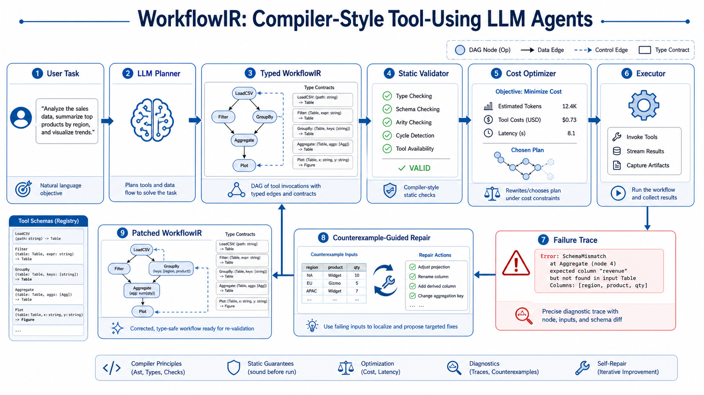
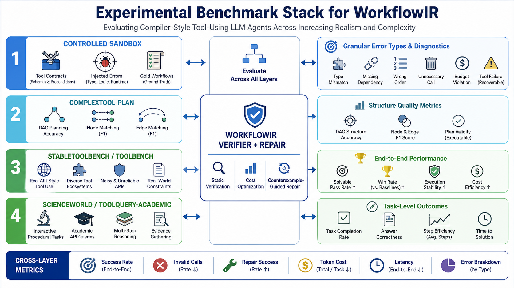

ReAct
每一步根据 observation 决定下一个 action，灵活但缺少全局结构。
- 容易局部贪心和绕圈。
- 长链任务中错误持续累积。
- 每一步都调用 LLM，成本高。
ReAct 让 LLM 能灵活调用工具，但容易局部短视；DAG planner 提供全局结构，但仍然执行未验证的图。 WorkflowIR 的核心是把工具工作流表示成 typed intermediate representation，让计划在执行前被检查、优化，并在执行中被局部修复。
自然语言任务，包含目标、约束、偏好和隐含需求。
input生成结构化 WorkflowIR，而不是直接输出下一步工具调用。
generation节点带类型、schema、precondition、effect、cost 和 failure mode。
program检查类型、数据依赖、前置条件、安全边界和预算。
verify删除死节点、合并重复调用、并行化、便宜工具优先。
optimize执行失败后定位最小错误子图，局部 patch，而不是全图重写。
repair我们的论文不是“再做一个 planner”，而是指出 planner 生成的图也需要像程序一样被验证和修复。
每一步根据 observation 决定下一个 action，灵活但缺少全局结构。
先生成全局工具计划，再交给 executor 执行，结构更清晰。
把 workflow 表示成可编译程序，并在执行前后持续约束。
同一个旅行预算任务，在 ReAct、普通 DAG 和 WorkflowIR 下会呈现完全不同的可靠性。
帮我找下个月去东京开会的机票、酒店，并生成预算表。
关键隐含约束：出发城市、会议地址、日期范围、币种、预算表字段、API 可用性。
Thought: 先搜索机票。 Action: search_flight(destination="Tokyo") Observation: missing origin and date Thought: 用户说下个月，先猜一个日期范围。 Action: search_flight(destination="Tokyo", date="next month") Observation: multiple ambiguous ranges Thought: 先查酒店。 Action: search_hotel(city="Tokyo") Observation: too many results 风险：中途忘记会议地址，重复查酒店，预算表字段不一致。
search_flight -> search_hotel -> calculate_budget -> write_report 问题： - search_flight 是否需要出发城市？ - search_hotel 是否需要会议地址？ - calculate_budget 是否需要统一币种？ - write_report 是否需要固定表格 schema？ - search_flight 和 search_hotel 是否其实可以并行？
抽取出发地、日期范围、会议地点和预算偏好。
output: TravelSpec
基于 TravelSpec 搜索航班。
input: TravelSpec
output: list[FlightOption]
基于地点和日期搜索酒店。
input: TravelSpec, Location
output: list[HotelOption]
统一机票和酒店价格币种。
input: FlightOption[], HotelOption[]
output: BudgetTable
生成预算表和 Markdown 报告。
input: BudgetTable
output: MarkdownReport
Type Check: B.input == TravelSpec C.input includes Location D.input prices have currency fields Dataflow Check: A -> B, A -> C B,C -> D D -> E Cost Optimization: B and C can run in parallel cache duplicated city/date queries Repair Example: hotel API fails: missing meeting_address patch: add node infer_meeting_location add edge infer_meeting_location -> search_hotels
WorkflowIR 的论文贡献可以被组织成一组明确的编译器式 pass，每个 pass 都对应可测量的错误类型。

这张图可以作为视觉学习版主图：展示 User Task、LLM Planner、Typed WorkflowIR、Static Validator、Cost Optimizer、Executor、Failure Trace 和 Counterexample-Guided Repair 的闭环。
实现上需要三个对象：工具契约、WorkflowIR 图、诊断报告。检查器不是再问一次 LLM，而是用确定性规则先过滤明显不可执行的计划。
Contract 是检查器的类型系统。它可以来自 API schema、工具文档，也可以从历史成功/失败轨迹中学习。
ToolContract:
name: search_hotels
input:
city: string
check_in: date
check_out: date
location_hint: string?
output:
hotels: list[HotelOption]
precondition:
check_in < check_out
city is not empty
effects:
provides: hotels.price, hotels.currency
failure_modes:
MissingDate
AmbiguousLocation
NoAvailability
每个 pass 输入一张 WorkflowIR 图，输出一组 errors / warnings / optimization hints。
报告必须能告诉 executor 或 repair model：哪里错、为什么错、最小怎么改。
| 检查规则 | 检测方法 | 发现的问题 | 修复动作 |
|---|---|---|---|
| Required input rule | 对照 tool contract 的 required fields | 缺少 `origin_city`、`check_in_date` 等参数 | 插入信息抽取节点，或向用户澄清 |
| Type compatibility rule | 检查上游 output type 是否能匹配下游 input type | `list[HotelOption]` 被直接传给需要 `BudgetTable` 的节点 | 插入 transform / aggregation 节点 |
| Precondition rule | 执行符号规则或轻量验证函数 | `check_in >= check_out`、未登录、权限不足 | 重排节点、补认证步骤、修正日期范围 |
| Dependency rule | 做图可达性和数据依赖分析 | 节点依赖不存在、死节点、错误顺序 | 补边、删死节点、重新拓扑排序 |
| Cost rule | 累加每个节点的 token、API cost、latency 估计 | 计划超预算、昂贵工具过早调用 | 便宜工具优先、并行化、缓存复用 |
Compiler-style verifier pseudo-code:
def verify(workflow, tool_contracts, budget):
diagnostics = []
diagnostics += check_graph_is_dag(workflow)
diagnostics += check_required_inputs(workflow, tool_contracts)
diagnostics += check_type_and_dataflow(workflow, tool_contracts)
diagnostics += check_preconditions(workflow, tool_contracts)
diagnostics += check_cost_and_safety(workflow, budget)
if has_blocking_errors(diagnostics):
patch = propose_minimal_patch(workflow, diagnostics)
return VerificationResult(status="blocked", diagnostics=diagnostics, patch=patch)
optimized = optimize_workflow(workflow)
return VerificationResult(status="ready", diagnostics=diagnostics, workflow=optimized)
实验要分成“可控诊断”和“真实 benchmark”两条线：前者证明编译器检查确实减少哪类错误，后者证明方法能迁移到已有 tool-use agent 任务。

这张 AI 生成图展示四层实验栈：可控 sandbox、DAG planning benchmark、真实 API 风格 tool-use benchmark，以及交互式/学术查询类任务。网页下方的文字表格给出准确实验设计。
我们自建 30-50 个多工具任务，每个工具都有 schema、precondition、effect 和 failure mode，用于精确注入错误并做错误归因。
用 ComplexTool-Plan 评估 planner 生成 DAG / WorkflowIR 的结构质量，重点看 node selection、edge dependency 和 exact match。
用 StableToolBench / ToolBench、ScienceWorld、ToolQuery-Academic 测真实执行效果、工具调用稳定性和成本。
这是我们自己构造的最小可控环境，目的不是追求大规模，而是把错误类型拆清楚。
`Beyond ReAct` 提出的 DAG planning 数据集，来自 4,500+ API 工具库，区分 Easy/Hard 难度。
ToolBench 覆盖大量真实 API 风格工具；StableToolBench 用缓存和 API simulator 缓解真实 API 不稳定问题。
ScienceWorld 是交互式科学任务环境；ToolQuery-Academic 更接近学术 API 查询与工具选择场景。
| 实验问题 | Benchmark | 比较方法 | 关键结论想证明 |
|---|---|---|---|
| 编译器检查是否有用？ | Controlled Sandbox | ReAct、DAG-only、WorkflowIR without checks、WorkflowIR full | WorkflowIR 能显著降低 type mismatch、missing dependency、wrong order。 |
| 结构化计划是否更准确？ | ComplexTool-Plan | Prompted DAG planner、Beyond-ReAct-style planner、WorkflowIR planner | Typed IR 不只是 DAG，多出的 contract 字段让计划更可验证。 |
| 端到端执行是否提升？ | StableToolBench / ToolBench | ReAct、Plan-and-Execute、LLMCompiler、DAG-only、WorkflowIR full | WorkflowIR 在成功率、无效调用、推理步数和成本之间取得更好平衡。 |
| 动态环境是否有效？ | ScienceWorld | ReAct、Reflexion-style repair、WorkflowIR repair | 把失败映射为 counterexample 后，局部修复比整体重试更稳定。 |
任务最终是否完成。
无效工具调用比例。
失败后局部修复成功率。
LLM 调用和工具调用成本。
论文定位不是“又一个 agent 框架”，而是提出一个更基础的系统抽象。
ReAct agents are locally adaptive but globally myopic and expensive. Planner-based agents improve global structure but still execute unverified workflow graphs. We introduce a compiler-style architecture that represents tool workflows as typed IR, enabling static validation, cost-aware optimization, and counterexample-guided repair.
ReAct 解决了工具调用的灵活性，但没有解决全局结构；DAG planner 解决了全局结构，但没有解决可验证执行。 我们提出 WorkflowIR，把 agent workflow 从“模型生成的计划”提升为“可编译的程序”。
执行前发现类型、依赖、前置条件和预算错误。
减少无效 LLM/tool calls，合并重复步骤，识别可并行分支。
失败后局部 patch 子图，而不是整条 workflow 重来。